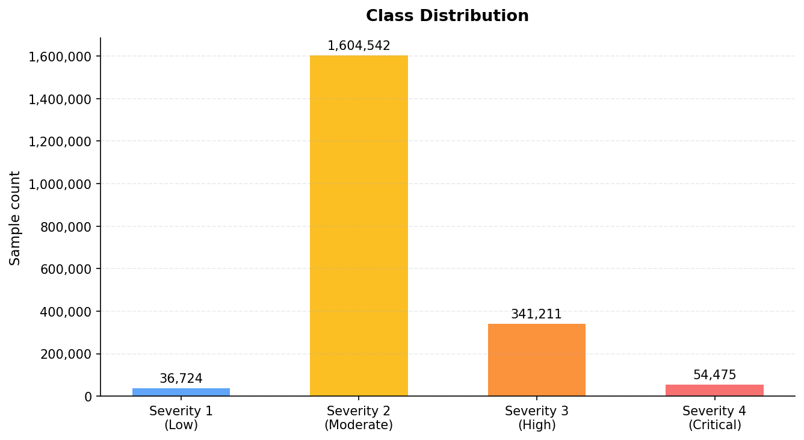
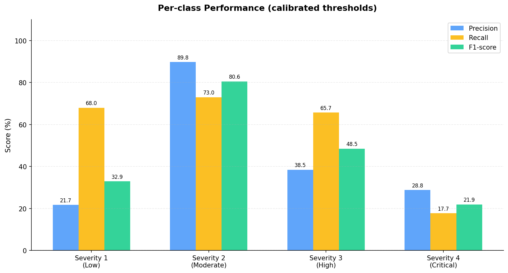
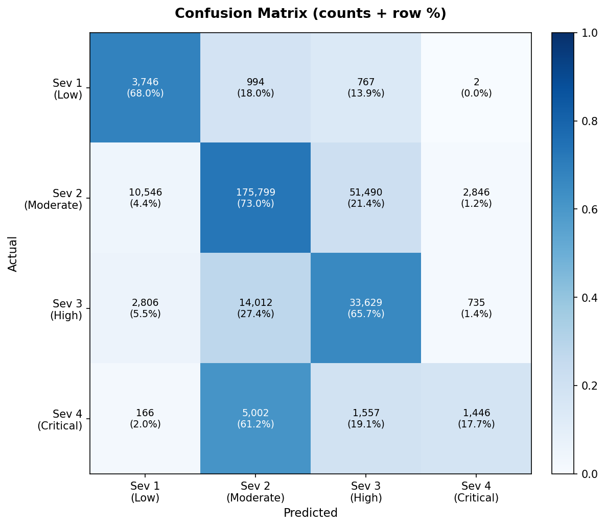
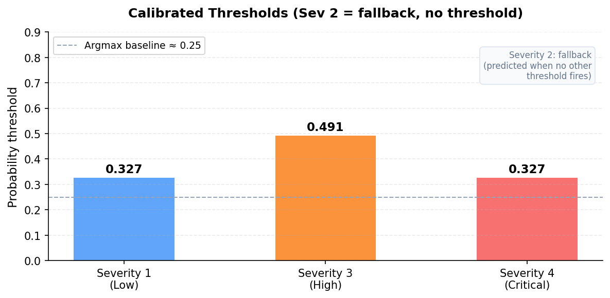
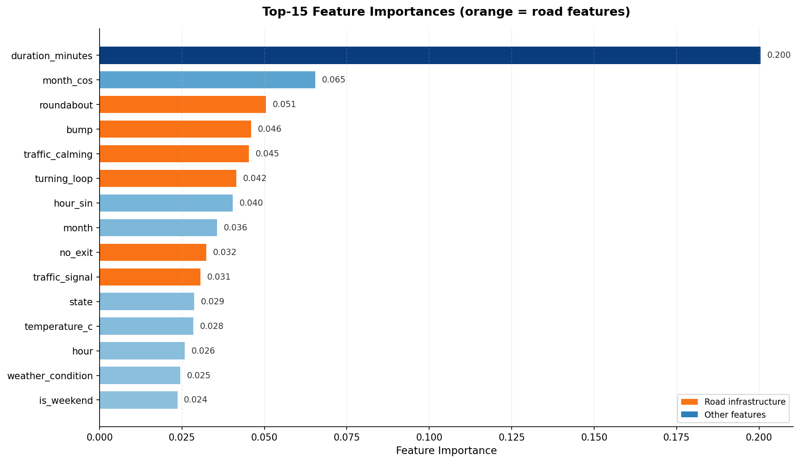

Generated: 2026-05-02 19:46:58 | 2,036,952 records
13 road features Joint threshold tuning balanced_subsample


| Severity | Precision | Recall | F1-Score | Support |
|---|---|---|---|---|
| Severity 1 — Low | 0.217 | 0.680 | 0.329 | 5,509 |
| Severity 2 — Moderate | 0.898 | 0.730 | 0.806 | 240,681 |
| Severity 3 — High | 0.385 | 0.657 | 0.485 | 51,182 |
| Severity 4 — Critical | 0.288 | 0.177 | 0.219 | 8,171 |


| Class | Threshold |
|---|---|
| Severity 1 (Low) | 0.327 |
| Severity 3 (High) | 0.491 |
| Severity 4 (Critical) | 0.327 |
| Severity 2 (Moderate) | fallback |
Severity 2 has no threshold — it is always the fallback prediction when no other class threshold fires. This prevents it from collapsing all predictions to the majority class.
